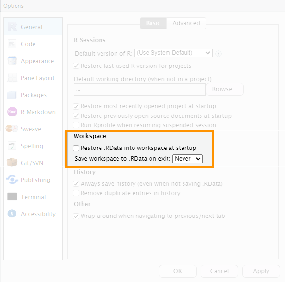

1 Getting started
Get started with crime mapping by learning about why putting crime on maps is useful, and get a tour of the RStudio software we will use throughout this course.
1.1 Welcome to this course
Welcome to this course on crime mapping! This course uses interactive tutorials like this one to help you learn about using maps and spatial analysis techniques to understand crime. Watch this video to learn more about the course.

1.2 Why put crimes on maps?
This course is about how we can use maps and other spatial analysis tools to help understand, prevent and respond to crime. Watch this video to understand why spatial analysis is a useful tool for understanding crime.

Weisburd, D. (2015). The law of crime concentration and the criminology of place. Criminology, 53(2), 133-157.
Johnson, S. (2010). A brief history of the analysis of crime concentration. European Journal of Applied Mathematics, 21(4-5), 349.
Farrell, G. (2015). Crime concentration theory. Crime Prevention and Community Safety, 17(4), 233-248.
1.3 Why is crime concentrated in space?
Why is crime concentrated in space? Watch this video to find out more about how our environment influences opportunities for crime and how that causes clusters of different crimes.

Santos, R. B. (2015). Routine Activity Theory: A Cornerstone of Police Crime Analyst Work. In The Criminal Act:
Cohen, L. E., and Felson, M. (1979). Social Change and Crime Rate Trends: A Routine Activity Approach. American Sociological Review, 44(4), 588–608.
1.4 Finding your way around RStudio
We will use RStudio for almost all of this course. Watch this video to find your way around the different panels in the RStudio window.

1.4.1 Slightly adjusting how RStudio works
Before we start using RStudio, we should make a few changes to how it is set up that will make it easier to fix any mistakes we make while coding. To do this, click on the Tools menu in RStudio and then on Global Options…. In the dialogue box that opens, click on General in the left-hand panel if General is not selected already.

In the “Workspace” section of the right-hand panel, find an option that says “Restore .RData into workspace at startup” and make sure the check box to the left of that option is not checked. On the next line down, click the drop-down menu labelled “Save workspace to .RData on exit:” and choose the option Never. Click Apply and then OK to close the dialogue box.
The RStudio IDE Cheat Sheet highlights some of the features available in RStudio and gives a list of available keyboard short-cuts.
Writing Code in RStudio is a webinar that talks you through RStudio in more detail.
1.6 In summary
Now that you know why crime mapping is useful for understanding crime, why crime is typically concentrated in space and how to find your way around RStudio, in the next tutorial we will produce our first crime map in R.
If you’re not feeling too confident at this point in the course, don’t worry – learning something new is always a bit of a roller coaster and there is lots of help available in subsequent tutorials.

Stats Illustrations by Allison Horst licensed under the Creative Commons Attribution licence.